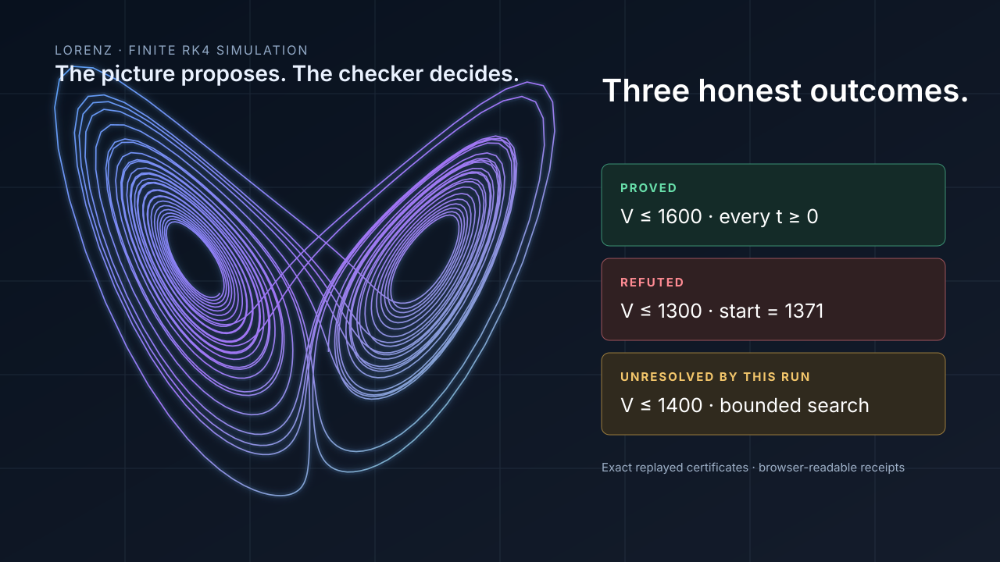

Glitnir + Forseti + Lean
What if a scientific claim had three honest outcomes?
Ask. Search. Check. Keep the receipts.
Second system · same test
The three-mode coefficient ODE returns the same triptych.
Proved E ≤ 9
Refuted E ≤ 1
Unresolved E ≤ 8
The theorems, negations, bounded-run receipts and exact dependency pins are browser-readable.